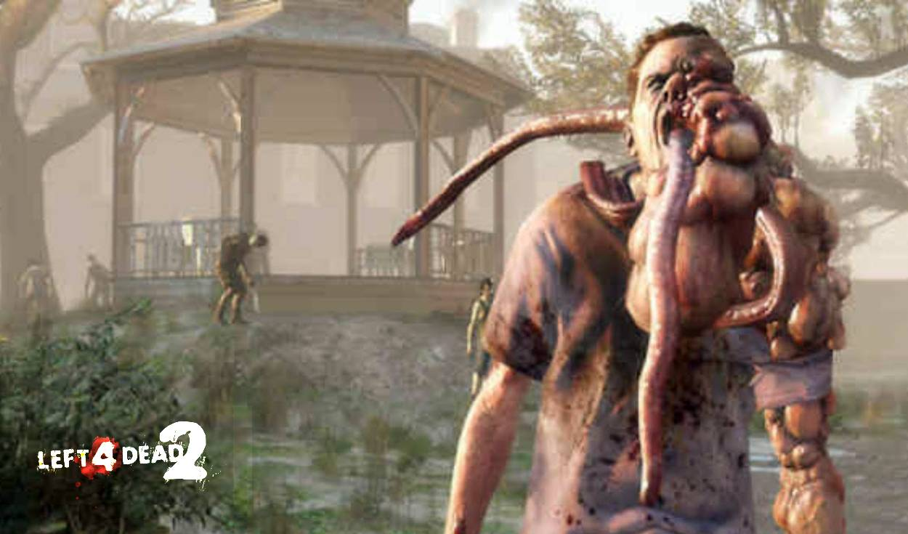
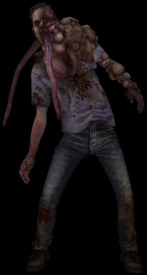

El Smoker es un infectado especial que esta presente desde el primer juego, siendo una de las primeras amenazas de la gripe verde, pero a pesar de su temprana aparición durante el apocalipsis la C.E.D.A. no tuvo la oportunidad para estudiarlo.
La peculiaridad de este infectado especial es atacar a distancia a los sobrevivientes. El Smoker no es un infectado que pueda hacer un daño critico a los sobrevivientes como los demás infectados siendo su daño cuerpo a cuerpo el equivalente de un infectado común.

Este infectado brilla al separar a uno de los sobrevivientes de su grupo. Cuenta con una larga lengua que sujeta a su objetivo y lo arrastra lentamente hacía el propio Smoker y si hay algún muro u obstáculo en el camino el sobreviviente se quedara atrapado entre el obstáculo y la lengua. Si el sobreviviente llega hasta el Smoker este le empezara a rasguñar; si el sobreviviente se llegara a estancar con un obstáculo este se quedará suspendido dejándolo vulnerable ante los ataques de los infectados comunes que ronden por la zona.
Su apariencia es una masculina y la mayoría de su cuerpo no muestra grandes mutaciones de la gripe verde a excepción de su rostro y cuello. Estos muestran grandes protuberancias que desfiguraron todo el lado izquierdo de su cuerpo extendiéndose hasta el brazo de ese mismo lado. El resto de su rostro se encuentran varios tentáculos, presumiblemente lenguas. Fuera de la deformidad causada por el virus y cómo fue mencionado antes, el infectado no muestra grandes cambios físicamente así que su vestuario es el mismo que este portaba antes de ser infectado.

Si un Smoker sujeta al sobreviviente con su lengua es posible detenerlo disparándole en el pequeño tiempo de reacción de tienen los sobrevivientes antes de ser sujetados completamente por el Smoker. Si el sobreviviente fue atrapado completamente por la lengua del infectado sus compañeros deben disparar al infectado, liberando al instante a su compañero o podrían dañar cuerpo a cuerpo la lengua del Smoker soltando a su compañero, pero dejando la posibilidad de que este infectado vuelva a atacar.
Dado a su nombre se da por hecho que el origen del Smoker viene de un infectado que tenía el habito de fumar, pero al haber la posibilidad sobre los fumadores pasivos o activos se empezó a teorizar que el portador era una persona que sufría de cáncer pulmonar y seguía siendo un fumador activo. Se explica que la gripe verde muto el cáncer del Smoker y esto fue lo que genero las deformidades que presenta en su forma de infectado especial, y al ser un fumador activo la producción de humo de tabaco igualmente se vio afectado por la cepa haciendo que este genere esta sustancia de forma autónoma.